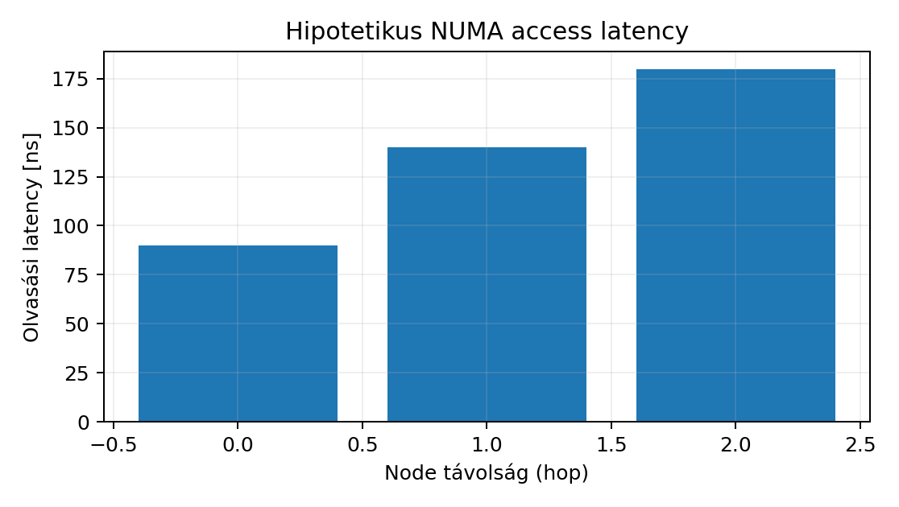

Egy többmagos C++ szolgáltatásnál előfordul, hogy a benchmark
laborban elért átvitel éles környezetben rendszeresen visszaesik,
miközben a CPU-fogyasztás látszólag változatlan. A fejlesztői
eszköztárból a perf és a profilozó azt mutatja, hogy a
szálak futnak, a munkaterhelés helyes, a memóriaallokációk sem
szivárognak. A hiányzó réteg gyakran a szerver fizikai topológiája: egy
kétfoglalatos (two-socket) gépen a processzorok nem egységes sebességgel
érik el a teljes fizikai memóriát. A numactl és a
hwloc eszközökkel megérthető, hogy egy szál melyik
processzorcsoporton fut, és az általa használt memória melyik fizikai
node-hoz tartozik. A tárgyalt módszerekkel a C++ szolgáltatás
erőforrás-közelsége tudatosan tervezhető, és a döntés mérhetővé
válik.
A nem egységes memória-hozzáférés (Non-Uniform Memory Access, NUMA) olyan többprocesszoros architektúra, ahol minden CPU-csoporthoz saját memóriavezérlő és fizikai memóriatartomány tartozik. Ezt a csoportot NUMA node-nak nevezzük. Egy x86-64 kétfoglalatos szerveren általában két node van, minden processzorfoglalatban saját memória-csatornával. Amikor egy CPU a saját node-jának memóriáját olvassa, local access történik; amikor egy másik node memóriáját kell elérnie, az adat az interconnecten (Intel UPI, AMD Infinity Fabric) halad át, ez a remote access. A remote hozzáférés nagyobb késleltetéssel és gyakran kisebb sávszélességgel jár. A kernel a távolságokat egy distance matrixban tárolja: a local általában 10, az 1-hop remote 20, a 2-hop remote távolabbi topológián nagyobb érték.
A Linux alapértelmezett memóriapolicy-je a first-touch (első
érintés). Amikor egy processz egy új lapot (page) először ír vagy olvas,
a kernel a hibát okozó CPU node-ján foglalja a fizikai keretet. Az első
érintő szál tehát meghatározza a lap elhelyezkedését. Ez egyszerű és jó
eredményt ad, ha a szál később is ugyanazon a node-on fut. A probléma
akkor jelenik meg, ha a scheduler később áthelyezi a szálat egy másik
node-ra, vagy ha egy másik node-on futó szál rendszeresen hozzáfér
ugyanahhoz a memóriához. A kernel a mbind(2),
set_mempolicy(2) és a numa_alloc_onnode(3)
felületeken keresztül enged explicit policy-t, a gyakorlati
adminisztrációhoz azonban legtöbbször a numactl parancs
elegendő.
A taskset a processz vagy szál CPU affinity maskját
állítja be. Ez egy bitmaszk, amely meghatározza, hogy a scheduler mely
CPU-kon futtathatja az adott entitást. A taskset csak a
CPU-halmazzal foglalkozik, a memóriaelhelyezést nem befolyásolja. A
numactl ennél magasabb szintű: a --cpunodebind
egy NUMA node CPU-ira korlátozza a futtatást, a --membind a
memóriafoglalást egy adott node-hoz köti, a --interleave
több node között osztja el a lapokat, a --preferred pedig
egy preferált node-ot jelöl ki. A hwloc eszközcsalád
(hwloc-ls, lstopo) a processzorok, cache-ek,
memóriavezérlők és PCIe-eszközök fizikai topológiáját jeleníti meg, így
a NUMA-node-hovatartozás vizuálisan ellenőrizhető.
Az affinity mask korlátozza a futtatható CPU-k halmazát, de nem foglalja le azokat. Más processzek továbbra is ugyanazokat a magokat használhatják, okozhatnak cache- és sávszélesség-kontenziót. A memóriapolicy sem ad kizárólagos tulajdont: egy másik node-on futó processz továbbra is elérheti ugyanazt a tartományt. A CPU-affinity tehát egy ütemezési korlát, nem valós idejű izoláció. Az affinity mask ugyanakkor kemény korlát: az ütemező a szálat csak a maszkban szereplő CPU-k között mozgatja, azokon belül viszont a load balancer szabadon áthelyezheti. Ha a halmaz túlterhelt, a szálak várakoznak (run queue), nem költöznek ki a maszkon kívülre. (A fair ütemezési osztály a 6.6-os kerneltől EEVDF-alapú; az Ubuntu 24.04 6.8-as kernele már ezt használja, a korábbi CFS-elnevezés helyett.) A valós izolációhoz cgroup v2 CPU-controller, cpuset és processz-exkluzív CPU rész lesz szükséges, amit későbbi fejezetek tárgyalnak.
Többfoglalatos kiszolgálókon a node-ok közötti adatút osztozik az
interconnecten, ezért a nagy sávszélességet igénylő munkaterhelésnél
kerülni kell a felesleges remote forgalmat. Virtualizált környezetben a
KVM/QEMU képes vNUMA topológiát prezentálni a vendégnek; ekkor a vendég
numactl --hardware kimenete a hypervisor által definiált
virtuális node-okat mutatja, és a vCPU-pinning határozza meg, hogy a
vendég processzorai mely fizikai node-okon futnak. A hálózati kártyák
(NIC) is egy-egy NUMA node-hoz tartoznak (amelyiknek a PCIe root
portjára csatlakoznak), ezért az ezen a node-on futó CPU és a DMA-hoz
használt memória lokalitása számíthat nagy csomagsebességnél. Az
IRQ-affinity és a NIC ring paraméterek a későbbi hálózati fejezetekben
kapcsolódnak ehhez.
Az alábbi parancsok egy kétfoglalatos labhoston
(labhost-srv1) futnak, ahol a laborfelhasználó
labops. A kimenet illusztratív fixture, nem tényleges
futtatásból származik. A laborhoz ilyen hardver hiányában egy virtuális
vNUMA topológiát is használhatunk, de a fizikai host kimenetét
egyszerűbb értelmezni. Az első lépés a NUMA-topológia
feltérképezése.
# Cél: labhost-srv1, felhasználó: labops,
# jogosultság: sudo a teljes topológiához
sudo numactl --hardwareVárt, illusztratív kimenet:
available: 2 nodes (0-1)
node 0 cpus: 0 1 2 3 4 5 6 7 8 9 10 11 12 13 14 15
node 0 size: 65528 MB
node 0 free: 60123 MB
node 1 cpus: 16 17 18 19 20 21 22 23 24 25 26 27 28 29 30 31
node 1 size: 65528 MB
node 1 free: 59987 MB
node distances:
node 0 1
0: 10 20
1: 20 10A distance matrixból látjuk, hogy node 0 és node 1 között egy
interconnect hop van, a local 10, a remote 20. A hwloc-ls
ugyanezt a topológiát egységes faformában mutatja:
# Cél: labhost-srv1, UID: labops, nem igényel root-ot
hwloc-ls --of consoleA kimenetből a Package, L3, Core, PU vonalon az látszik, hogy az első
16 CPU az első package-hez tartozik, a második 16 a másodikhoz. A
numastat -p a futó processz rezidens memóriáját node-onként
jeleníti meg, vagyis a lapok elhelyezését (nem a hozzáférések
lokalitását). Indítsunk egy egyszerű labprocesszt nagy névleges
memóriaterülettel, például egy hosszan futó C++ tesztprogramot, amely
négy szálat indít, és folyamatosan olvassa a saját memóriapufferét.
# Cél: labhost-srv1, UID: labops, nem igényel root-ot
/opt/lab/bin/lab-cpp-svc --threads 4 --buffer-mib 8192 \
--duration 60s &
LAB_PID=$!
sleep 5
numastat -p "$LAB_PID"Várt, illusztratív numastat kimenet a processz indulása
után, ha a main thread node 0-on futott, de a scheduler a többi szálat
node 1-re helyezte:
Per-node process memory usage (in MBs) for PID 1234 (lab-cpp-svc)
Node 0 Node 1 Total
--------------- --------------- ---------------
Huge 0.00 0.00 0.00
Heap 0.15 0.00 0.15
Stack 0.04 0.00 0.04
Private 8195.20 0.00 8195.20
---------------- --------------- --------------- ---------------
Total 8195.39 0.00 8195.39Ez azt jelenti, hogy a teljes puffer a node 0 memóriájában van, de a
szálak fele várhatóan node 1-en fut. Ez a felállás remote access-t
generál; ennek tényleges arányát nem a numastat, hanem
hardveres számlálók mérik (például
perf stat -e node-loads,node-load-misses -p "$LAB_PID" -- sleep 10,
ha a CPU és a VM támogatja). A processz által jelentett elért
sávszélesség hipotetikus értéke 8,1 GB/s lehet, miközben ugyanez local
elhelyezéssel 11,7 GB/s. A local/remote latency illusztratív modelljét
az alábbi ábra és táblázat mutatja.

| Hop | Leírás | Latency [ns] |
|---|---|---|
| 0 | local | 90 |
| 1 | 1-hop remote | 140 |
| 2 | 2-hop remote (csak 4+ node-os topológián; a példa gépén nincs) | 180 |
A példában a munkaterhelés local-hozzáférést igényel, ezért a policy-t explicit módon node 0-ra rögzítjük:
# Cél: labhost-srv1, UID: labops, nem igényel root-ot
# A fenti processzt leállítjuk, majd node 0 futtatást és memóriát kötünk
kill $LAB_PID
wait $LAB_PID 2>/dev/null || true
numactl --cpunodebind=0 --membind=0 \
/opt/lab/bin/lab-cpp-svc --threads 4 --buffer-mib 8192 \
--duration 60s &
LAB_PID=$!
sleep 5
# Ellenőrzés: CPU-halmaz és memória node
taskset -pc "$LAB_PID"
numastat -p "$LAB_PID"Várt, illusztratív ellenőrző kimenet:
pid 1240's current affinity list: 0-15Per-node process memory usage (in MBs) for PID 1240 (lab-cpp-svc)
Node 0 Node 1 Total
--------------- --------------- ---------------
Huge 0.00 0.00 0.00
Heap 0.15 0.00 0.15
Stack 0.04 0.00 0.04
Private 8195.20 0.00 8195.20
---------------- --------------- --------------- ---------------
Total 8195.39 0.00 8195.39A folyamat CPU-halmaza a node 0 16 CPU-jára korlátozódik, a memória
node 0-on van, így a szálak local access-t kapnak. A várt sávszélesség a
modellünk szerint 11,7 GB/s-ra nő. A rollback: a folyamat leállítása és
numactl nélküli újraindítása, így az alapértelmezett policy
érvényes. A taskset -p önmagában nem rollback, mert csak a
CPU-maszkot állítja vissza, a --membind memóriapolicy-t
nem.
A leggyakoribb hiba, hogy a fejlesztő csak CPU-affinityt állít, a
memóriapolicy-t nem. Ilyenkor a szálak local node-on futnak, de a
first-touch miatt a memória a régi node-on maradhat. A
numastat -p <PID> ezt node-onkénti memóriaként
mutatja (a lapok elhelyezése); a ténylegesen távoli hozzáférést a
perf stat -e node-loads,node-load-misses -p <PID> -- sleep 10
(ha elérhető) méri. A paraméter nélküli numastat
numa_hit/numa_miss/other_node
számlálói allokációs, nem hozzáférési események. A
numactl --cpunodebind önmagában nem elegendő, mindig
explicit memóriapolicy-vel kell párosítani, vagy gondoskodni kell arról,
hogy a memóriát a cél node-on érintse először a szál. Egy másik tévedés,
hogy az interleave mindig gyorsabb: ez akkor igaz, ha a munkaterhelés
sok szálon keresztül egyenletesen fogyasztja a memóriát, de alacsony
szálszám esetén a remote késleltetés ronthat. A harmadik gyakori hiba a
túlzott rögzítés: ha minden processzt ugyanarra a node-ra pinelünk, a
másik node kihasználatlan, a node várakozási sora feltelik, és a
CPU-elszámolás romlik. Az affinity nem izolál: a stress-ng
vagy más terhelés továbbra is ugyanazokat a magokat használhatja.
Diagnosztikai lépésként először mindig numastat -p és
numactl --hardware kimenetét kell megvizsgálni, mielőtt a
scheduler okoljuk.
Magyarázó feladat. Adott a kidolgozott példában
szereplő numactl --hardware kimenet. Válaszolj: hány NUMA
node van, mely CPU-k tartoznak node 1-hez, és mit jelent a distance
matrix 20-as értéke? Fogalmazd meg, miért lehet egy 24 szálas C++
szolgáltatás számára veszélyes a first-touch policy, ha a szálak száma
meghaladja egy node CPU-inak számát (16).
Adminisztrációs/konfigurációs feladat.
Előfeltétel: a stress-ng csomag telepítve van
(command -v stress-ng). Indíts egy labprocesszt a
következőképpen:
stress-ng --vm 2 --vm-bytes 2G --timeout 60s. A feladat:
futtasd a processzt node 1-hez kötött CPU- és memóriapolicy-vel, majd
igazold a CPU-affinityt és a memóriaelhelyezést a taskset
és numastat kimenetével. Add meg a használt parancsokat, a
szükséges jogosultságot, az ellenőrzést, és a rollback lépést.
Diagnosztikai/failure/recovery feladat. Egy több
szálat használó C++ szolgáltatás éles környezetben 30%-os
átvitelveszteséget mutat a laborhoz képest. A
numastat -p <pid> kimenete szerint a memória node
1-en van, de a processz CPU-affinityje 0-15 (node 0). Hipotézisként
állapítsd meg, miért lassulhat a szolgáltatás. Írd le a mérési és
javítási lépéseket, amelyekkel a remote access arányát csökkented (és
mondd meg, melyik eszköz méri a lapelhelyezést, melyik a hozzáférést),
és add meg a postconditiont, amely igazolja a javítás sikerét.
A topológiában 2 node van (0 és 1); node 1-hez a 16–31 CPU-k tartoznak. A distance 20 értéke azt jelenti, hogy a két node közötti memóriaelérés egy interconnect hopon keresztül történik, a local 10-hez képest kétszeres relatív költséggel. A 24 szál nem fér el egy node 16 CPU-ján, ezért legalább 8 szál a node 1-re kerül. Ha a puffert a node 0-n futó main thread érinti először, a first-touch miatt a teljes memória node 0-n keletkezik, így a node 1-en futó szálak minden elérése remote lesz. Ezért a memóriapolicy-t explicit módon kell igazítani a szálak elhelyezkedéséhez, vagy a lapokat interleave-elni.
A parancs:
# Cél: labhost-srv1, UID: labops, nem igényel root-ot
command -v stress-ng
numactl --cpunodebind=1 --membind=1 \
stress-ng --vm 2 --vm-bytes 2G --timeout 60s &
PID=$! # a stress-ng szülő (vezérlő) folyamat
sleep 2
taskset -pc "$PID"
# a memóriát a két stress-ng-vm gyermekfolyamat foglalja
for p in $(pgrep -P "$PID"); do
taskset -pc "$p"
numastat -p "$p"
doneA stress-ng --vm 2 egy vezérlő szülőfolyamatot és két
stress-ng-vm gyermekfolyamatot indít; a memóriát a
gyermekek foglalják, ezért a $! (a szülő)
numastat-ja csak néhány MB-ot mutatna. A gyermekek öröklik
a CPU-maszkot és a memóriapolicy-t. A várt kimenetben minden affinity
lista 16-31, és a gyermekek memóriája (a
--vm-bytes verziófüggő szemantikája szerint, lásd
man stress-ng) a Node 1 oszlopban van, a
Node 0 oszlopban közel nulla. Rollback: a folyamat
leállítása kill "$PID" és wait "$PID" (a szülő
leállítja a gyermekeket), vagy a processz újraindítása
numactl nélkül. Postcondition: a folyamatok CPU-affinityje
node 1-re korlátozott, és a lapjaik node 1-en vannak; a hozzáférés
lokalitását ezen felül a
perf stat -e node-loads,node-load-misses
igazolhatja.
A tünetből arra következtetünk, hogy a processz a node 0 CPU-in
fut, de a memóriája node 1-en van, így minden lapelérés remote. A
javítás előtt érdemes a hipotézist méréssel igazolni: a
numastat -p <pid> a lapok elhelyezését mutatja (node
1), a
perf stat -e node-loads,node-load-misses -p <pid> -- sleep 10
(ha a CPU és a VM támogatja) pedig a ténylegesen távoli hozzáféréseket.
A javítás kétféle lehet: (a) a szolgáltatást node 1-re pineljük:
numactl --cpunodebind=1 --membind=1 <szolgáltatás>,
vagy (b) ha a processznek node 0-on kell maradnia, a memóriát node 0-ra
kell helyezni. Ha a folyamat nem állítható le, a lapok a
migratepages <pid> 1 0 paranccsal (numactl csomag)
node 0-ra költöztethetők; a laborban a reprodukálható út a leállítás és
a helyes policy-vel történő újraindítás. A postcondition:
numastat -p <pid> azt mutatja, hogy a memória a
futtató node-on van, és a node-load-misses arány a korábbi
érték töredékére csökken; a szolgáltatás teljesítménye visszaáll a labor
szintre.
A NUMA node processzorok és a hozzájuk tartozó memóriavezérlő
csoportja. A local access a node-on belüli memóriaelérés, a remote
access az interconnecten keresztüli lassabb elérés. A Linux first-touch
policy szerint a lapot az első érintő CPU node-ján foglalja le. A
numactl és taskset eszközökkel a futtató
CPU-halmaz és a memóriapolicy explicit módon állítható; a
hwloc a fizikai topológiát vizualizálja. Az affinity csak
ütemezési korlát, nem erőforrás-izoláció. A futtatás helyét és a
memóriaelhelyezést mindig együtt kell tervezni, és a döntést a
numastat lapelhelyezésével és perf-számlálókkal mért
lokalitással kell igazolni.
Ebben a kérésben nem állt rendelkezésre ellenőrzött forrásjegyzet, és
a generátor nem futtatott parancsot. A fejezetben szereplő parancsok és
kimenetek illusztratív fixture-ök, nem tényleges laboreredmények. A
hivatkozott eszközök hivatalos dokumentációját a laborban használt
Ubuntu 24.04 LTS csomagverziókhoz kell ellenőrizni. Javasolt
olvasnivaló: numactl(8),
numastat(8),
taskset(1),
sched_setaffinity(2),
migratepages(8),
a hwloc-ls(1) (hwloc projekt), valamint a Linux kernel
dokumentációjának NUMA
memory policy oldala és az EEVDF
scheduler leírása (6.6+ kernel; az Ubuntu 24.04 kernele 6.8). A
példák laborban ellenőrizendők, dátumozott futtatási napló még nincs. A
seed URL-ek (például https://docs.kernel.org/ és
https://ubuntu.com/server/docs/) kiindulópontok, de jelen fejezetben nem
tekinthetők ellenőrzött bizonyítéknak. A platformfüggő distance értékek,
PCIe-node mapping és a KVM vNUMA viselkedés a tényleges hardveren és
hypervisor-verzióval validálandó.